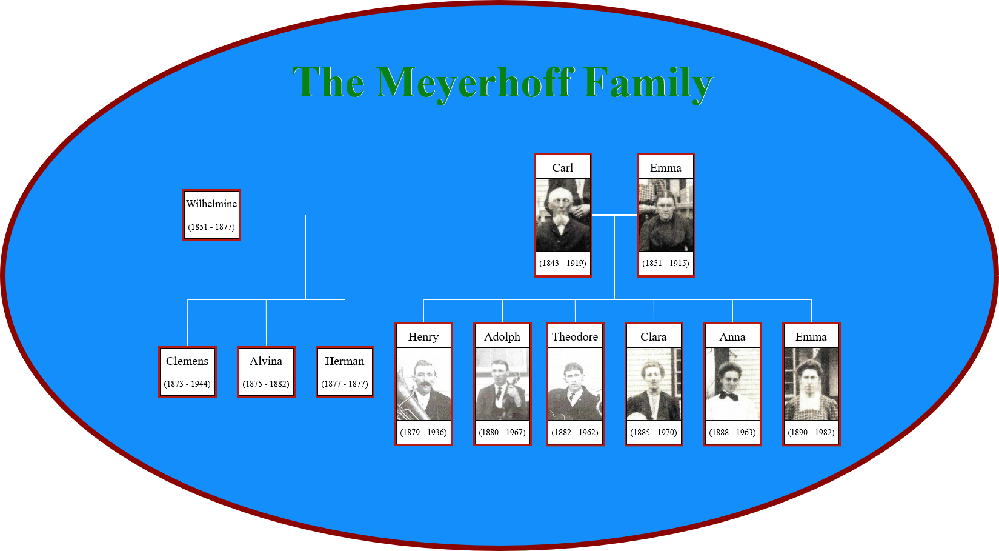

The Meyerhoff family descended from three brothers who immigrated to Randolph County from Germany in the mid-1800s. One of these brothers was the father of
Carl Heinrich Meyerhoff (1843-1919), where this tree begins. I have mixed details about Carl's parents; my tree has had them listed as Johann Kasten Meyerhoff
(1811-1872) and Katharine Margarethe (Koch) Meyerhoff (1809-1876) for years. I do not remember where this information came from, so I would take it with a grain of salt.
However, according to the 1870 census, a Henry Meyerhoff (26) lived with his parents, John C. Meyerhoff (61) and Mary Meyerhoff (61). The names are a close resemblance
and the dates of birth are similar but not exact.
Unfortunately, there is little to no verifiable information about the Meyerhoff ancestors who lived in Germany centuries before they immigrated. There have been
some trees passed around online that have various paths, and their evidence usually comes from German church records. The one I see the most lists Carl's paternal
grandparents as Heinrich Dietrich Meyerhoff (1763-1838) and Ilsabe Cathrina Hohls (1765-1829), with their ancestries on these trees traced centuries back (the Hohls line
having names as far back as 1470!).

Carl Meyerhoff had nine children, three with his first marriage and six with his second. He married Wilhelmine "Minnie" Lindenberg (1851-1877) on December 6,
1872, in Randolph County. The couple had three children together:
Born October 2, 1873, in Wine Hill, IL, Clemens was the first child of Carl Meyerhoff and the first of three children of his father's first marriage. He was
the only child of this union to survive to adulthood. He married Henrietta Louise Schrader (1875-1961) on August 12, 1900, in Wine Hill. Together they had five children:
Augest? Meyerhoff (c. 1902 - ????), Olga (Meyerhoff) Ehlers (1902-1990), Alvin Meyerhoff (1903-1990), Raymond Meyerhoff (1906-1991), and Edna (Meyerhoff) Meyer (1911-1982).
Their family moved to Jerome County in Idaho in the 1910s. Clemens passed away on January 30, 1944, in Eden, ID, at the age of 70. Henrietta passed away 17 years later, on
January 13, 1961, in Twin Falls, ID, at the age of 85. They were buried in Sunset Memorial Park Cemetery in Twin Falls.
Alvina Meyerhoff (1875-1882)
Alvina was Carl and Minnie's second child, born February 20, 1875, in Wine Hill, IL. Church records indicate her full name is Caroline Christine Alvine Meyerhoff,
but her gravestone only mentions "Alvina." She passed away at the young age of seven on June 3, 1882, from a combination of whooping cough and typhoid. She was buried in
Saint Paul Lutheran Cemetery in Wine Hill.
Herman Clemens Meyerhoff (Mar. 1877 - Apr. 1877)
Herman was the third and last child of Carl and Minnie's union, born March 7, 1877, in Wine Hill. He was the last child because his mother passed away five days
after his birth from winter fever, possibly exacerbated by childbirth complications. Herman did not fare much better; he passed away on April 4, 1877, from
tuberculosis (commonly labeled as "consumption"). He was buried in Saint Paul Lutheran Cemetery.
After the deaths of his wife and son, Carl remarried to Emma Walter (Walther/Wolter?) (1851-1915) on December 2, 1877, in St. Louis, MO. This second marriage produced
six children, who all survived to adulthood. I don't know much about Emma's family; her maiden name's spelling is uncertain, and I
believe there are three possible iterations of her last name. One possible connection for Emma's parents is the couple William Walter (1815-1886) and Mary Ann McCall
(1831-1900), who lived in Ohio but spent some time in Missouri around the time Emma was born.
Carl Meyerhoff passed away on May 19, 1919, in Wine Hill, at the age of 76. Emma had passed away four years earlier, on November 6, 1915, in Wine Hill,
at the age of 64. Together they were buried in Saint Paul Lutheran Cemetery in Wine Hill.
Henry William Meyerhoff (1879-1936)
William was the first child of Carl and Emma's marriage, and Carl's fourth child overall. Born on January 4, 1879, in Wine Hill, he was the only child who
survived to adulthood and did not start a family. He moved out to Idaho with several of his other siblings and (along with Clemens) chose to stay. He passed
away on May 7, 1936, in Fairfield, ID, at the age of 57. According to his newspaper obituary, he was killed when his wagon overturned and threw him onto a
hillside, breaking his back and killing him instantly. He was buried in Trinity Lutheran Church Cemetery in Eden, ID.
Adolph was the couple's second child, born December 21, 1880, in Percy, IL. At some point in his life he acquired the nickname "Wolf." He married Emma Louise Wilhelmine Eggers (1890-1970) on May 25, 1911, in Jackson
County, IL. Together they had nine children, of whom seven survived to adulthood: Raymond Meyerhoff (1912-2004), Edna (Meyerhoff) Wettig (1914-2002), Alfred Meyerhoff
(1916-2001), Albert Meyerhoff (1917-2004), Irene (Meyerhoff) Steffens (1919-2010), Unnamed Son (born and died December 25, 1922), Esther (Meyerhoff) Beckman (1924-2017),
Ruby Meyerhoff (1927-1931), and Verna (Meyerhoff) Golding (1931-1992). Adolph passed away on July 11, 1967, in Anna, IL, at the age of 86. Emma passed away three years later
on January 30, 1970, in Wine Hill, at the age of 79. They were buried in Saint Paul Lutheran Cemetery.
Theodore was the third child of Carl and Emma, born December 14, 1882, in Wine Hill. He married Margaretha Agnes Brandt (1892-1948) on April 21, 1912, in Campbell
Hill. Together they had seven children, three daughters and four sons: Lorene (Meyerhoff) Lohman (1913-1970), Edmund Meyerhoff (1915-1992), Henry Meyerhoff (1917-1986),
Omer Meyerhoff (1919-1985), Elmer Meyerhoff (1922-1983), Gertrude (Meyerhoff) Kloepper (1924-2007), and Evelyn (Meyerhoff) Kloepper (1928-1977). Margaretha passed away on
October 4, 1948, in Chester, IL, at the age of 55. Theodore followed her in death 13 years later on January 12, 1962, in Campbell Hill, IL, at the age of 79. They were buried
in Saint Peter Lutheran Cemetery in Campbell Hill.
Clara was the fourth child and first daughter of Carl and Emma's union, born July 13, 1885, in Wine Hill. She married August Herman Hoops (1884-1959) on April 27, 1911,
in Wine Hill. Together they had eight children, of whom only three survived to adulthood: Raymond Hoops (Mar. 1912 - Jun. 1912), Anna Hoops (1913-1915), Mary Hoops
(Jun. 1916 - Jul. 1916), Leona (Hoops) Rathert (1917-1973), Irene (Hoops) Thies (1920-2006), Walter Hoops (1923-1928), Norman Hoops (1924-1926), and Ellanora (Hoops)
Knop (1929-2016). August passed away on August 14, 1959, in Willisville, IL, at the age of 74. Clara passed away 11 years later on November 2, 1970, in Willisville, at the
age of 85. They were buried in Saint Peter Lutheran Cemetery.
Anna was the couple's fifth child, born June 28, 1888, in Randolph County. She married Henry Troue (1883-1947) on December 26, 1908, in Wine Hill. Together they had
six children, five sons and one daughter: Arthur Troue (1909-1922), Harold Troue (1912-1975), Herbert Troue (1916-1988), Nora (Troue) Richelmann (1918-2011), Omer Troue
(1922-2001), and Elmer Troue (1925-1975). Henry passed away August 5, 1947, in Union County, IL, at the age of 64. Anna followed him in death 16 years later on June 15, 1963,
at the age of 74. They were buried in Saint Peter's Lutheran Cemetery in Wine Hill (different from the Campbell Hill one).
Emma was the last child of Carl and Emma, born July 25, 1890, in Wine Hill. She married Herman Joost (1887-1961) on September 14, 1913, in Wine Hill. Together they had
two children, the smallest family in the Meyerhoff tree: Erna Joost (1919-2011) and Elmer Joost (1926-2004). Emma passed away on December 15, 1982, in Percy, at the age of
92. Her husband passed away on January 2, 1961, at the age of 73, after a faulty pump caused him to drown in his home well. They were buried in Saint Peter's Lutheran Cemetery
in Wine Hill.